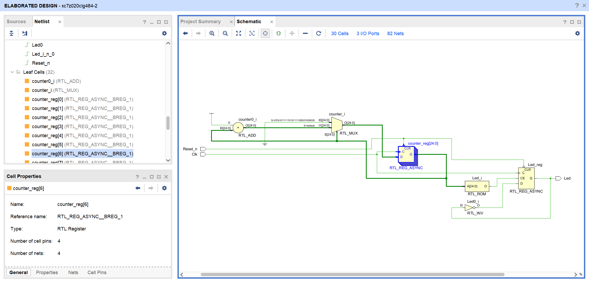
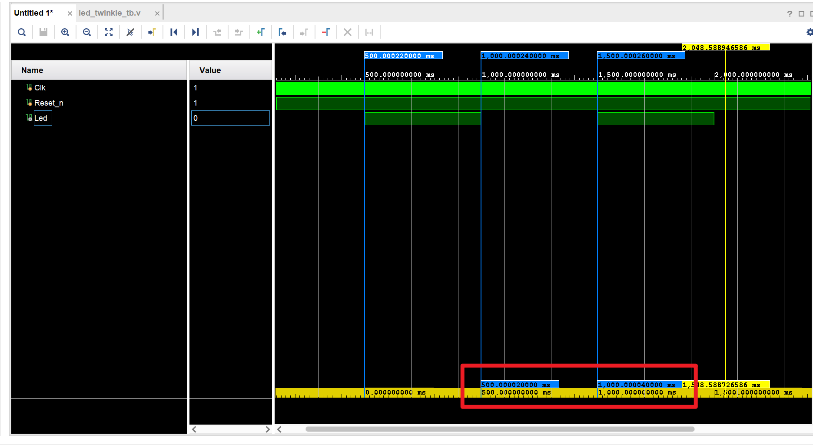
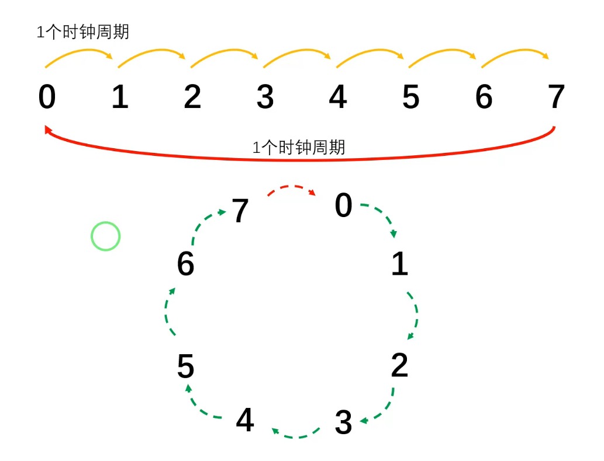
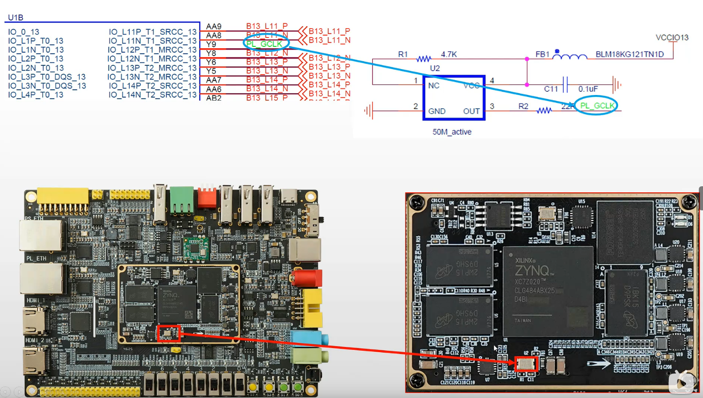

实现Led_Twinkle
这个模块只需要两个端口，一个CLK给D触发器提供时钟信号，另一个就是LED，驱动开发板上的LED亮灭。

(a) 计数器达到阈值前的波形状态

(b) 计数器归零时刻的波形（多出20ns）
25_000_000 - 1这里多了20ns，也就是说多了一个时钟周期，为什么？ 
注意计数器本身归零也需要一个时钟周期，而always语句块是在每个时钟上升沿被驱动，描述的是状态机在那个时刻的变化情况，并接着这个变化后的状态维持一个时钟周期。所以这里的if条件，counter要改成25_000_000 - 1。
板级验证
时钟信号
找到为PL侧提供时钟信号的晶振。 
复位信号
随机灯
LSFR(Linear Feedback Shift Register 线性反馈移位寄存器)
给定前一状态的输出，将该输出的线性函数再用作输入的移位寄存器。异或运算是最常见的但比特线性函数：对寄存器的某些为进行异或操作后作为输入，再对寄存器中的各比特进行整体移位。
1 | wire feedback = rnd[7] ^ rnd[5] ^ rnd[4] ^ rnd[3]; |
呼吸灯
如何调整pwm波的电平比例？
cnt 从 0 数到 9999 不断循环，duty 是一个在 0~10000 之间缓慢变化的阈值。
当 cnt < duty 时输出高电平，否则低电平。这样高电平的时间比例 = duty/10000，就实现了占空比变化。
1 | cnt = (cnt + 1) mod 10000 // 等差数列取模 |
PWM就是比较两个等差数列的大小关系，输出脉冲波形。
每次 PWM 周期内，输出为 1 的那些 cnt 值，恰好构成一个从 0 开始的公差为 1 的等差数列，长度为 duty。
我们通过这样的等差数列，在离散的系统中利用人眼的视觉暂留效果实现了连续的亮度变化感受。